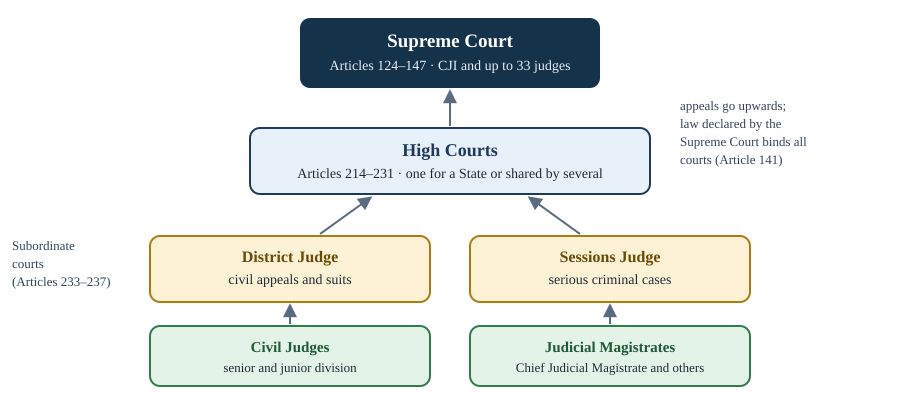

Chapter 7: The Judiciary¶
The Supreme Court, the High Courts, the subordinate courts and the power of judicial review
Learning outcomes
When you have finished this chapter you should be able to:
- describe the integrated structure of the Indian judiciary;
- explain how judges of the Supreme Court and High Courts are appointed, including the collegium system and the fate of the National Judicial Appointments Commission;
- state the qualifications, tenure and procedure for removal of judges, and the safeguards of judicial independence;
- classify the jurisdiction of the Supreme Court (original, writ, appellate, advisory) and of the High Courts;
- explain the meaning, basis and limits of judicial review;
- describe the subordinate courts, tribunals and Lok Adalats;
- discuss judicial activism and its critics in a balanced way.
7.1 An integrated judiciary¶
In a federation like the United States there are two sets of courts: federal courts that apply federal law and state courts that apply state law. India chose differently. It has a single integrated judiciary: one hierarchy of courts, with the Supreme Court at the top, the High Courts below it and the subordinate courts below them. The same courts enforce both Union and State laws. An appeal from a village magistrate's decision can, in principle, travel all the way to the Supreme Court.

This design came largely from the Government of India Act, 1935, which had created a Federal Court above the provincial High Courts. The Supreme Court replaced the Federal Court and the Judicial Committee of the Privy Council in London, which had been the final court of appeal for India. It was inaugurated on 28 January 1950.
The judiciary has three main functions under the Constitution: it decides disputes between persons and between governments; it is the guardian and final interpreter of the Constitution; and it protects the Fundamental Rights of individuals.
Key idea
India has one integrated hierarchy of courts that applies both Union and State law. At its head, the Supreme Court is the final court of appeal, the guardian of the Constitution, the protector of Fundamental Rights and the arbiter of disputes between the Centre and the States.
7.2 The Supreme Court: composition and appointment¶
Composition¶
Article 124 provides for a Supreme Court consisting of a Chief Justice of India and such number of other judges as Parliament may fix by law. The original Constitution provided for seven other judges. Parliament has increased the number several times; since 2019 the sanctioned strength is the Chief Justice and 33 other judges, 34 in all. The Court sits in Delhi, or in such other places as the Chief Justice may decide with the approval of the President (Article 130).
The Chief Justice may, with the President's consent, appoint a High Court judge as an ad hoc judge of the Supreme Court when there is no quorum of permanent judges (Article 127), and may request retired judges to sit and act as judges (Article 128).
Qualifications¶
A person is qualified to be a judge of the Supreme Court if he or she is a citizen of India and
- has been a judge of a High Court (or of two or more High Courts in succession) for at least five years; or
- has been an advocate of a High Court (or two or more High Courts in succession) for at least ten years; or
- is, in the opinion of the President, a distinguished jurist.
No minimum age is prescribed.
Appointment: from consultation to collegium¶
Article 124(2) says that judges are appointed by the President after consultation with such judges of the Supreme Court and High Courts as the President thinks necessary, and that in appointing a judge other than the Chief Justice, the Chief Justice of India shall always be consulted. The meaning of "consultation" has been the subject of four major cases, known as the Judges cases.
| Case | Year | Holding |
|---|---|---|
| S. P. Gupta v. Union of India (First Judges case) | 1981 | "Consultation" does not mean concurrence; the executive has the final say. |
| Supreme Court Advocates-on-Record Association v. Union of India (Second Judges case) | 1993 | Overruled the first case: the opinion of the Chief Justice, formed after consulting senior judges, has primacy. This created the collegium system. |
| In re Special Reference 1 of 1998 (Third Judges case) | 1998 | On a Presidential reference: the Chief Justice must consult a collegium of the four senior-most judges for Supreme Court appointments (two for High Court appointments). |
| Supreme Court Advocates-on-Record Association v. Union of India (Fourth Judges case) | 2015 | Struck down the 99th Amendment and the National Judicial Appointments Commission Act as violating the independence of the judiciary, a part of the basic structure. The collegium system continues. |
Table 7.1. The Judges cases.
Under the collegium system as it now works, the Chief Justice of India and the four senior-most judges of the Supreme Court recommend names for appointment to the Supreme Court; for High Courts, the High Court's own collegium recommends names, which are considered by the Supreme Court collegium. The government may return a recommendation for reconsideration once, but if the collegium reiterates it, the appointment should be made. Procedural details are set out in a Memorandum of Procedure agreed between the judiciary and the government.
The 99th Amendment (2014) had sought to replace the collegium with a National Judicial Appointments Commission consisting of the Chief Justice of India, the two senior-most judges, the Union Law Minister and two eminent persons. In the Fourth Judges case (2015), the Supreme Court held, by four to one, that giving the executive and lay members a role that could veto judicial members compromised judicial independence.
A continuing debate
The collegium system is unusual: in few countries do judges in effect choose judges. Its defenders say it protects courts from political influence. Its critics say it lacks transparency and accountability. Even the judgment that struck down the National Judicial Appointments Commission acknowledged that the collegium system needed improvement. The question remains open.
By a long-standing convention, the senior-most judge of the Supreme Court is appointed Chief Justice of India. The convention was departed from in 1973 and 1977, which led to much criticism, and it has been followed since.
Tenure and removal¶
A Supreme Court judge holds office until the age of 65. He or she may resign by writing to the President, and may be removed only in the manner laid down in Article 124(4): by an order of the President passed after an address by each House of Parliament, supported by a majority of the total membership of that House and by two-thirds of the members present and voting, presented in the same session, on the ground of proved misbehaviour or incapacity.
The procedure is laid down in the Judges (Inquiry) Act, 1968:
- A motion for removal must be signed by at least 100 members of the Lok Sabha or 50 members of the Rajya Sabha.
- The Speaker or Chairman may admit or refuse it.
- If admitted, a three-member committee is set up: the Chief Justice of India or a Supreme Court judge, a Chief Justice of a High Court, and a distinguished jurist. It frames charges and investigates.
- If the committee finds the judge guilty, the House takes up the motion. If both Houses pass it by the special majority, an address is presented to the President, who orders removal.
No judge of the Supreme Court has ever been removed. A motion against one judge failed in the Lok Sabha in 1993, and in 2011 a High Court judge resigned after the Rajya Sabha had voted for his removal and before the Lok Sabha took up the motion.
Worked example 7.1: Removing a judge
Situation. A removal motion against a High Court judge, supported by the committee's finding of misbehaviour, is voted on in the Lok Sabha. The House has a total membership of 543. 420 members are present and voting; 300 vote in favour. Is the motion carried in the Lok Sabha?
Answer. Two conditions apply. (1) A majority of the total membership: more than half of 543, that is at least 272. 300 is more than 272, so this is met. (2) Two-thirds of those present and voting: \(\tfrac{2}{3} \times 420 = 280\). 300 is more than 280, so this is met too. The motion is carried in the Lok Sabha. It must also be carried by the same special majority in the Rajya Sabha in the same session before the President can order removal.
Safeguards of independence¶
The framers wanted judges to decide cases without fear of the government. The Constitution protects their independence in several ways:
- Appointment involves the judiciary itself, not the executive alone.
- Security of tenure: judges can be removed only by the difficult procedure of Article 124(4).
- Fixed service conditions: salaries, allowances and rights cannot be varied to a judge's disadvantage after appointment, except during a financial emergency (Article 125).
- Expenses charged on the Consolidated Fund of India, so they are not voted by Parliament (Article 146).
- No discussion of the conduct of a judge in Parliament or a State legislature, except on a motion for removal (Articles 121 and 211).
- Ban on practice after retirement: a retired Supreme Court judge may not plead or act before any court or authority in India (Article 124(7)).
- Power to punish for contempt of itself (Article 129).
- Separation of the judiciary from the executive (Article 50).
7.3 The jurisdiction of the Supreme Court¶
Jurisdiction means the authority of a court to hear and decide cases. The Supreme Court has several kinds.
| Jurisdiction | Article(s) | What it covers |
|---|---|---|
| Original | 131 | Disputes between the Union and one or more States, or between States, involving a legal right |
| Writ | 32 | Enforcement of Fundamental Rights |
| Appellate | 132–134, 136 | Appeals in constitutional, civil and criminal cases; special leave to appeal |
| Advisory | 143 | Opinions on questions referred by the President |
| Court of record | 129 | Its records are evidence; it can punish for contempt |
| Review | 137 | Review of its own judgments |
| Other | 139A, 141, 142 | Transfer of cases; law declared binding on all courts; orders for complete justice |
Table 7.2. The jurisdiction of the Supreme Court.
Original jurisdiction (Article 131)¶
The Supreme Court has exclusive original jurisdiction in any dispute between the Government of India and one or more States, between the Government of India and any State or States on one side and one or more other States on the other, or between two or more States, if the dispute involves a question of law or fact on which the existence or extent of a legal right depends. This is the federal function of the Court. It does not extend to disputes arising out of pre-Constitution treaties and similar instruments, and Parliament has excluded inter-State river water disputes, which go to tribunals under a law made under Article 262.
Writ jurisdiction (Article 32)¶
As Chapter 3 explained, any person can move the Supreme Court directly for the enforcement of a Fundamental Right. Strictly, this is part of the Court's original jurisdiction, since the case begins in the Supreme Court, but it is usually treated separately. The High Courts have a concurrent and wider jurisdiction under Article 226.
Appellate jurisdiction¶
The Supreme Court is the highest court of appeal.
- Constitutional matters (Article 132). An appeal lies from a judgment of a High Court if the High Court certifies that the case involves a substantial question of law as to the interpretation of the Constitution.
- Civil matters (Article 133). An appeal lies if the High Court certifies that the case involves a substantial question of law of general importance that needs to be decided by the Supreme Court.
- Criminal matters (Article 134). An appeal lies as of right if the High Court has reversed an acquittal and sentenced the accused to death, or has withdrawn a case from a lower court, convicted the accused and sentenced him or her to death; and in other cases if the High Court certifies that the case is fit for appeal.
- Special leave to appeal (Article 136). The Supreme Court may, in its discretion, grant special leave to appeal from any judgment, decree or order of any court or tribunal in India, except military tribunals. This is the widest appellate power and the source of most of the Court's appeals.
Advisory jurisdiction (Article 143)¶
The President may refer to the Supreme Court any question of law or fact of public importance on which it is expedient to obtain the Court's opinion. The Court may report its opinion; it is not bound to answer, and its opinion is advisory, not binding on the President. (For disputes arising out of certain pre-Constitution treaties, the Court must give its opinion.) Well-known references include those on the Kerala Education Bill (1958), the Berubari Union (1960), the powers of legislatures over privileges (1964) and judicial appointments (1998). The Court declined to answer a reference made in 1993 on the Ayodhya dispute.
Other powers¶
- Court of record (Article 129). Its judgments are recorded for perpetual memory and testimony and can be cited as precedents, and it can punish for contempt of itself.
- Review (Article 137). The Court can review its own judgments. Beyond review, it has created the curative petition, which allows a final judgment to be re-examined in rare cases to prevent abuse of process or a gross miscarriage of justice (Rupa Ashok Hurra v. Ashok Hurra, 2002).
- Binding law (Article 141). The law declared by the Supreme Court is binding on all courts in India.
- Complete justice (Article 142). The Court may pass any decree or order necessary for doing complete justice in any matter before it.
- Constitution benches (Article 145(3)). A case involving a substantial question of law as to the interpretation of the Constitution must be heard by at least five judges.
Worked example 7.2: Which jurisdiction?
Identify the jurisdiction of the Supreme Court involved in each case.
- Two States disagree about whether a law of one of them unlawfully restricts the legal rights of the other over a shared resource (not a river).
- A journalist is detained under a preventive detention law and claims that her rights under Articles 21 and 22 have been violated.
- The President asks the Court whether a proposed law would be constitutional.
- A company loses a tax case in a High Court and wants the Supreme Court to hear an appeal, though the High Court has refused a certificate.
Answers. (1) Original jurisdiction under Article 131. (2) Writ jurisdiction under Article 32 (she could also go to the High Court under Article 226). (3) Advisory jurisdiction under Article 143. (4) It can seek special leave to appeal under Article 136, which the Court grants in its discretion.
7.4 The High Courts¶
Article 214 provides that there shall be a High Court for each State, but Article 231 allows Parliament to establish a common High Court for two or more States and a Union Territory. At the time of writing there are 25 High Courts. Some serve more than one State or Union Territory; for example, the Gauhati High Court serves Assam, Nagaland, Mizoram and Arunachal Pradesh, and the Punjab and Haryana High Court serves the two States and Chandigarh.
Appointment and tenure¶
Each High Court has a Chief Justice and such other judges as the President appoints. The judges are appointed by the President (Article 217) after consultation with the Chief Justice of India and the Governor of the State, and, for a judge other than the Chief Justice, the Chief Justice of the High Court; in practice through the collegium system described above. A judge must be a citizen and have held judicial office in India for ten years or been an advocate of a High Court for ten years. High Court judges retire at 62 (raised from 60 by the 15th Amendment, 1963). They are removed in the same way as Supreme Court judges. The President may transfer a judge from one High Court to another after consulting the Chief Justice of India (Article 222).
Jurisdiction¶
- Original jurisdiction. Some High Courts hear certain civil suits in the first instance, and all hear matters such as election petitions.
- Writ jurisdiction (Article 226). The High Courts can issue writs for the enforcement of Fundamental Rights and for any other purpose, which makes this jurisdiction wider than the Supreme Court's under Article 32.
- Appellate jurisdiction. Appeals from district and subordinate courts in civil and criminal matters.
- Supervisory jurisdiction (Article 227). Superintendence over all courts and tribunals within its territory, except military tribunals.
- Control over subordinate courts (Article 235). Postings, promotions and discipline of district judges and other judicial officers.
- Court of record (Article 215), with the power to punish for contempt.
In L. Chandra Kumar v. Union of India (1997), the Supreme Court held that the power of judicial review of the High Courts under Articles 226 and 227 is part of the basic structure; tribunals may supplement the High Courts but cannot exclude their review.
7.5 Subordinate courts, tribunals and Lok Adalats¶
Subordinate courts¶
Articles 233 to 237 deal with the subordinate courts. District judges are appointed by the Governor in consultation with the High Court (Article 233); other judicial officers are appointed by the Governor after consultation with the State Public Service Commission and the High Court (Article 234). The High Court controls the subordinate courts (Article 235).
The structure varies a little from State to State, but in each district the District Judge is the highest judicial authority. When dealing with civil cases he or she is called the District Judge, and when dealing with criminal cases, the Sessions Judge. Below are civil judges (senior and junior division) for civil cases and judicial magistrates, headed by the Chief Judicial Magistrate, for criminal cases. Laws such as the Gram Nyayalayas Act, 2008 provide for village-level courts.
Tribunals¶
The 42nd Amendment (1976) added Part XIVA. Article 323A allows Parliament to set up administrative tribunals to decide disputes about the recruitment and conditions of service of public servants; the Central Administrative Tribunal was established in 1985. Article 323B allows Parliament and the State legislatures to set up tribunals for other matters, such as taxation, land reform and industrial disputes. After L. Chandra Kumar (1997), the decisions of tribunals can be challenged before a High Court.
Lok Adalats¶
Lok Adalats ("people's courts") are forums for the amicable settlement of disputes, given statutory status by the Legal Services Authorities Act, 1987. They deal with cases pending in courts or at the pre-litigation stage, such as motor accident claims, family disputes and bank recovery cases. Their awards are deemed to be decrees of civil courts and are final; there is no appeal. The same Act sets up legal services authorities at the national, State and district levels to provide free legal aid, giving effect to Article 39A.
7.6 Judicial review¶
Judicial review is the power of the courts to examine whether a law made by a legislature, or an action taken by the executive, is consistent with the Constitution, and to declare it void if it is not. The idea is usually traced to the American case Marbury v. Madison (1803), in which the United States Supreme Court asserted this power although the American Constitution does not mention it expressly.
Basis in the Constitution¶
The Indian Constitution does not use the phrase "judicial review", but the power is plain from several provisions:
- Article 13: laws inconsistent with Fundamental Rights are void;
- Articles 32 and 226: the courts' power to enforce Fundamental Rights;
- Articles 245 and 246, with the Seventh Schedule: the division of legislative power, which the courts must police;
- Articles 131 to 136 and 143: the jurisdiction of the Supreme Court;
- Article 254: inconsistency between Union and State laws;
- Article 372: pre-Constitution laws continue only subject to the Constitution.
Grounds¶
A law can be struck down on three broad grounds:
- it violates a Fundamental Right;
- it is beyond the competence of the authority that made it (for example, a State law on a Union List subject); or
- it is repugnant to another provision of the Constitution.
Executive actions can be struck down for these reasons and also for being illegal, irrational, procedurally unfair or disproportionate.
Scope and limits¶
In the United States, judicial review rests on "due process of law", which allows courts to examine the fairness of laws; Indian courts began with the narrower "procedure established by law" (Chapter 3). Over time, through Maneka Gandhi and later cases, Indian review has become broad. The courts now apply doctrines such as:
- presumption of constitutionality: a law is presumed valid, and the person challenging it must show otherwise;
- pith and substance: to decide which list a law falls under, the court looks at its true nature, not its incidental effects (Chapter 8);
- colourable legislation: what cannot be done directly cannot be done indirectly;
- proportionality: a restriction on a right must pursue a legitimate aim, be suitable and necessary for it, and balance the harm against the benefit, a test applied in K. S. Puttaswamy (2017) and other cases.
Since Kesavananda Bharati (1973), even constitutional amendments are subject to review under the basic structure doctrine, discussed in Chapter 11. In Minerva Mills (1980) and L. Chandra Kumar (1997), the Supreme Court held that judicial review itself is part of the basic structure, so it cannot be abolished even by amendment.
Judicial review is not judicial supremacy
Judicial review does not mean that judges may substitute their own policy preferences for those of the legislature. Courts examine the legality and constitutionality of laws, not their wisdom. And in India, Parliament can respond to a judgment by changing the law, or by amending the Constitution, provided the amendment respects the basic structure. The system balances parliamentary sovereignty and judicial review.
7.7 Judicial activism and its critics¶
From the late 1970s, the Supreme Court and the High Courts became markedly more active. They relaxed the rules of standing to allow public interest litigation (Chapter 3), read many new rights into Article 21, issued detailed guidelines where the legislature had not acted (for example, on sexual harassment at the workplace in Vishaka, 1997, and on arrest in D. K. Basu, 1997), and supervised the implementation of their orders through continuing mandamus.
Supporters of this judicial activism argue that it gave a voice to the poor and powerless, filled gaps left by inactive legislatures and executives, and protected the environment and human rights. Critics argue that courts lack the expertise and democratic accountability to make policy, that some orders have been difficult to implement, and that judicial overreach can upset the separation of powers. Judges themselves have often called for judicial restraint. A balanced view is that activism is justified where it protects constitutional rights that would otherwise go unprotected, and that restraint is wise where questions of policy are properly for elected bodies.
The judiciary also faces practical challenges: a very large backlog of pending cases, vacancies in the courts, delay, and the cost of litigation. Measures such as Lok Adalats, fast-track courts, the use of technology and alternative dispute resolution aim to address them.
Landmark cases met in this book¶
| Case | Year | Principle | Chapter |
|---|---|---|---|
| A. K. Gopalan | 1950 | Narrow reading of Article 21 | 3 |
| Golaknath | 1967 | Fundamental Rights cannot be amended (later overruled) | 11 |
| Kesavananda Bharati | 1973 | Basic structure doctrine | 11 |
| Indira Nehru Gandhi v. Raj Narain | 1975 | Free and fair elections part of basic structure | 11 |
| Maneka Gandhi | 1978 | Just, fair and reasonable procedure | 3 |
| Minerva Mills | 1980 | Limited amending power; balance of Parts III and IV | 4, 11 |
| Indra Sawhney | 1992 | Reservations, creamy layer, 50 per cent ceiling | 3 |
| S. R. Bommai | 1994 | Limits on Article 356; secularism and federalism basic | 10 |
| K. S. Puttaswamy | 2017 | Right to privacy | 3 |
Table 7.3. Landmark cases and the chapters where they are discussed.
Summary
- India has a single integrated judiciary: Supreme Court, High Courts and subordinate courts, applying both Union and State law.
- The Supreme Court has a Chief Justice and up to 33 other judges. Judges are appointed by the President on the recommendation of the collegium (the Chief Justice and four senior-most judges), a system created by the Second and Third Judges cases; the National Judicial Appointments Commission was struck down in 2015.
- Supreme Court judges retire at 65 (High Court judges at 62) and can be removed only for proved misbehaviour or incapacity, by the special majority of each House in the same session, under the Judges (Inquiry) Act, 1968.
- The Supreme Court's jurisdiction is original (Article 131), writ (32), appellate (132–134, 136), advisory (143), and it is a court of record (129) whose law binds all courts (141) and which can do complete justice (142).
- High Courts have wide writ jurisdiction under Article 226 and supervise all courts in their territory under Article 227. Subordinate courts are headed in each district by the District and Sessions Judge.
- Judicial review rests on Articles 13, 32, 226, 245–246 and others; it covers laws, executive action and amendments (through the basic structure doctrine), and is itself part of the basic structure.
7.8 Exercises¶
Exercise 1
What is the sanctioned strength of the Supreme Court at present, and who fixes it?
Answer
The Chief Justice of India and 33 other judges (34 in all), fixed by Parliament by law under Article 124(1); the present number dates from 2019.
Exercise 2
Summarise in two or three sentences what the Second and Fourth Judges cases decided.
Answer
The Second Judges case (1993) held that in appointments the opinion of the Chief Justice of India, formed after consulting senior judges, has primacy, creating the collegium system. The Fourth Judges case (2015) struck down the 99th Amendment and the National Judicial Appointments Commission as violating the independence of the judiciary, a part of the basic structure, so the collegium system continues.
Exercise 3
Give five constitutional safeguards of the independence of judges.
Answer
Any five of: appointment involving the judiciary; removal only by the special parliamentary procedure for proved misbehaviour or incapacity; service conditions that cannot be varied to their disadvantage (except in a financial emergency); expenses charged on the Consolidated Fund; no discussion of their conduct in legislatures except on a removal motion; ban on practice after retirement; power to punish for contempt; separation of the judiciary from the executive.
Exercise 4
How is the writ jurisdiction of a High Court wider than that of the Supreme Court?
Answer
Under Article 226 a High Court can issue writs for the enforcement of Fundamental Rights and for any other purpose, that is, for ordinary legal rights as well. Under Article 32 the Supreme Court issues writs only for the enforcement of Fundamental Rights.
Exercise 5
Is the President bound by the Supreme Court's opinion under Article 143? Is the Court bound to give one?
Answer
No to both, in general. The opinion is advisory and does not bind the President, and the Court may decline to answer a reference (as it did with the Ayodhya reference made in 1993). The exception is a dispute arising out of certain pre-Constitution treaties under Article 143(2), on which the Court must give its opinion.
Exercise 6
State the three broad grounds on which a court may declare a law unconstitutional.
Answer
(1) It violates a Fundamental Right; (2) it is outside the legislative competence of the body that made it; (3) it is repugnant to another provision of the Constitution.
7.9 Quiz¶
Check yourself: the judiciary
Exercise 1
Under which article does the Supreme Court have exclusive jurisdiction over disputes between the Union and the States?
- Article 32
- Article 131
- Article 136
- Article 143
Answer
Article 131
Exercise 2
At what age do High Court judges retire?
- 60
- 62
- 65
- 70
Answer
62
Exercise 3
Which case struck down the National Judicial Appointments Commission?
- First Judges case
- Second Judges case
- Third Judges case
- Fourth Judges case
Answer
Fourth Judges case
Exercise 4
Which article says that the law declared by the Supreme Court binds all courts?
- Article 129
- Article 137
- Article 141
- Article 142
Answer
Article 141
Exercise 5
What is the name of the petition, created by the Supreme Court in 2002, that allows a final judgment to be re-examined after review?
Answer
curative petition / curative
Exercise 6
Lok Adalats were given statutory status by which law?
- Code of Civil Procedure 1908
- Legal Services Authorities Act 1987
- Gram Nyayalayas Act 2008
- Judges (Inquiry) Act 1968
Answer
Legal Services Authorities Act 1987
Exercise 7
Match each Article with the jurisdiction it gives the Supreme Court.
| A | B |
|---|---|
| Article 32 | Advisory jurisdiction |
| Article 136 | Court of record |
| Article 143 | Writ jurisdiction |
| Article 129 | Special leave to appeal |
Answer
Article 32 — Writ jurisdiction; Article 136 — Special leave to appeal; Article 143 — Advisory jurisdiction; Article 129 — Court of record